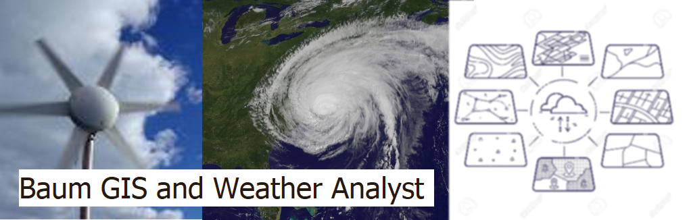

Surface Observations
Accueil
Fulcrum
Data
Environement Canada - HRDPS Model (2.5km resolution)
NWS-NCEP - HRRR Model (3.0km resolution)
Weather Radar Network Loop
GOES East Satellite Imagery
Surface Observations